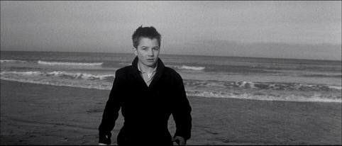

The 400 Blows, the Final Frame
François Truffaut · 1959 · Film, black and white (frame)
In copyright. Look and learn: shown for study, not for download.
The final beach scene was filmed at Villers-sur-Mer in Normandy, a few miles from Honfleur, where the reform school scenes were shot; almost everything else was filmed on location in Paris. It was François Truffaut's first feature as director. The film opened the 1959 Cannes Film Festival, where he won the award for best director. Jean-Pierre Léaud went on to play Antoine Doinel in four more films over twenty years.